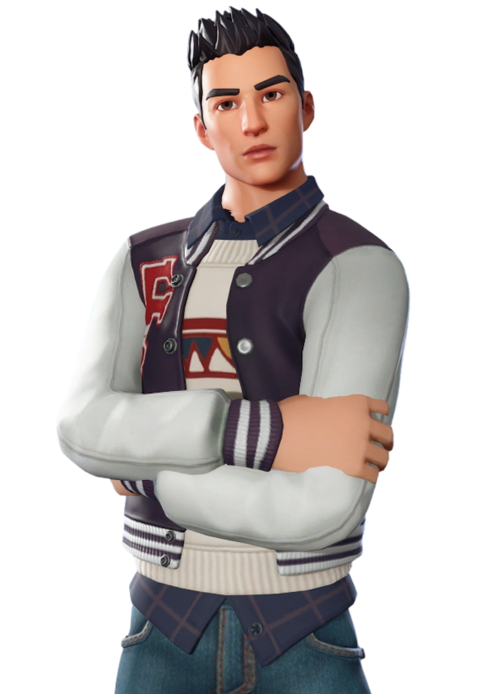
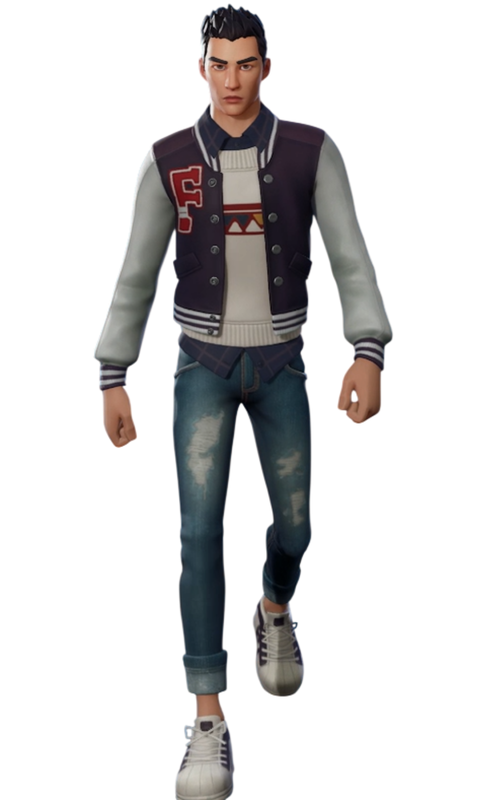

Hiro
// Archives Biographiques
Le Héros d'Havrèque
Guitariste passionné et pilier de son groupe d'amis, Hiro était reconnaissable à sa coupe hérissée et son emblématique blouson varsity blanc et mauve. Proche de Loper, qui nourrissait de profonds sentiments pour lui, il partageait le rêve de monter un groupe de punk rock avec elle. Lorsque leur monde fut submergé par une entité corruptrice, Hiro orchestra l'audacieux vol d'un cristal dimensionnel expérimental. Dans un sacrifice ultime, il se jeta dans le vide pour briser l'artefact, déclenchant une tempête qui balaya les monstres et propulsa Loper, Scarlet et Barret vers de nouvelles réalités. Emporté le premier par la déflagration, le destin du jeune musicien demeure un tragique mystère, oscillant entre l'exil dimensionnel et la désintégration totale.
// Variantes Visuelles
